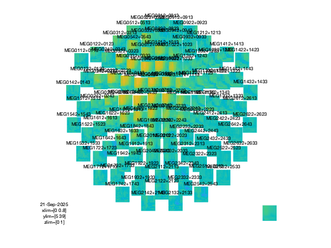

MEEG time-frequency searchlight
This example shows MVPA analyses performed on MEEG data, using a searchlight across the time, frequency and channel dimensions
The input dataset involved a paradigm with electrical median nerve stimulation for durations of 2s at 20Hz.
The code presented here can be adapted for other MEEG analyses, but there are a few potential caveats: * assignment of targets (labels of conditions) is based here on stimulation periods versus pre-stimulation periods. In typical analyses the targets should be based on different trial conditions, for example as set a FieldTrip .trialinfo field. * assignment of chunks (parts of the data that are assumed to be independent) is based on a trial-by-trial basis. For cross-validation, the number of chunks is reduced to two to speed up the analysis. * the time window used for analyses is rather small. This means that in particular for time-freq analysis a lot of data is missing, especially for early and late timepoints in the lower frequency bands. For typical analyses it may be preferred to use a wider time window. * the current examples do not perform baseline corrections or signal normalizations, which may reduce discriminatory power.
Note: running this code requires FieldTrip.
- For CoSMoMVPA's copyright information and license terms, #
- see the COPYING file distributed with CoSMoMVPA. #
Contents
get timelock data in CoSMoMVPA format
% set configuration config = cosmo_config(); data_path = fullfile(config.tutorial_data_path, 'meg_20hz'); % show dataset information readme_fn = fullfile(data_path, 'README'); cosmo_type(readme_fn); % reset citation list cosmo_check_external('-tic'); % load data data_fn = fullfile(data_path, 'subj102_B01_20Hz_timefreq.mat'); data_tf = load(data_fn); % convert to cosmomvpa struct ds = cosmo_meeg_dataset(data_tf); % set the target (trial condition) % here, 1=pre-stimulus, 2=peri-stimulus ds.sa.targets = ds.sa.trialinfo(:, 1); % set the chunks (independent measurements) % in this dataset, the first half of the samples (in order) % are the post-trials; % the second half the pre-trials ds.sa.chunks = [(1:145) (1:145)]'; % just to check everything is ok cosmo_check_dataset(ds); % get rid of features with at least one NaN value across samples fa_nan_mask = sum(isnan(ds.samples), 1) > 0; fprintf('%d / %d features have NaN\n', ... sum(fa_nan_mask), numel(fa_nan_mask)); ds = cosmo_slice(ds, ~fa_nan_mask, 2); % Define a channel neighborhood uses meg_combined_from_planar, which means % that input are planar channels but the output has % combined-planar channels. Note that with EEG data there is no need to set % the chan_type, as there is only a single type. chan_type = 'meg_combined_from_planar'; chan_count = 10; % use 10 channel locations (relative to the combined % planar channels) % as we use meg_combined_from_planar there are % 20 channels in each searchlight because % gradiometers are paired % Use cosmo_meeg_chan_neighborhood to define a channel neighborhood, % with 'count' set to chan_count, and 'chantype' set to chan_type. % Assign the result to chan_nbrhood. How many searchlight centers are in % the neighborhood? % >@@> chan_nbrhood = cosmo_meeg_chan_neighborhood(ds, 'count', chan_count, ... 'chantype', chan_type); fprintf('There are %d channel neighborhood centers\n', ... numel(chan_nbrhood.neighbors)); % <@@< % Define the frequency neighborhood using 9 time bins freq_radius = 0; % 4*2+1=9 freq bins % >@@> % Use cosmo_interval_neighborhood to define the frequency neighborhood. % Assign the result to a variable 'freq_nbrhood' % How many searchlight centers are in the neighborhood? freq_nbrhood = cosmo_interval_neighborhood(ds, 'freq', ... 'radius', freq_radius); fprintf('There are %d frequency neighborhood centers\n', ... numel(freq_nbrhood.neighbors)); % <@@< % Define the temporal neighborhood using 5 time bins time_radius = 2; % 2*2+1=5 time bines % Use cosmo_interval_neighborhood to define the temporal neighborhood. % Assign the result to a variable 'time_nbrhood' % How many searchlight centers are in the neighborhood? % >@@> time_nbrhood = cosmo_interval_neighborhood(ds, 'time', ... 'radius', time_radius); fprintf('There are %d temporal neighborhood centers\n', ... numel(time_nbrhood.neighbors)); % <@@< % cross the three neighborhoods to get a chan-freq-time neighborhood, % using cosmo_cross_neighborhood % How many searchlight centers are in the crossed neighborhood? % >@@> nbrhood = cosmo_cross_neighborhood(ds, {chan_nbrhood, ... freq_nbrhood, ... time_nbrhood}); % <@@< % Count how many features there are, on average, in each neighborhood, % and store the results in a variable 'nbrhood_nfeatures'. Then print its % average and standard deviation % >@@> nbrhood_nfeatures = cellfun(@numel, nbrhood.neighbors); fprintf('Features have on average %.1f +/- %.1f neighbors\n', ... mean(nbrhood_nfeatures), std(nbrhood_nfeatures)); % <@@< % divide .sa.chunks in ds into four chunks using cosmo_chunkize % >@@> nfolds = 4; ds.sa.chunks = cosmo_chunkize(ds, nfolds); % <@@< % Define partitions using cosmo_nfold_partitioner, and use % cosmo_balance_partitions afterwards. Assign the result to a variable % 'partitions' % >@@> partitions = cosmo_nfold_partitioner(ds); partitions = cosmo_balance_partitions(partitions, ds); % <@@< % Set the measure arguments measure_args = struct(); measure_args.partitions = partitions;
Summary
-------
MEG data in raw, time-locked and time-frequency formats.
Contents
--------
- subj102_B01_20Hz.fif raw MEG recording
- preproc.m Matlab preprocessing script (based on
FieldTrip)
- subj102_B01_20Hz_timefreq.mat Time-locked data (generated by preproc.m)
- subj102_B01_20Hz_timelock.mat Time-frequency data (generated by preproc.m)
- LICENSE License file
- README This file
Methods
-------
The dataset involved a paradigm with electrical median nerve stimulation with a
human participant for durations of 2s at 20Hz. Data was acquired at 1khz using
a neuromag306 system.
Trial info in the .mat files: 1=pre-stimulus, 2=peri/post-stimulus
License
-------
The contents are made available by Nathan Weisz <nathanweisz |at| me.com> and
Gianpaolo Demarchi <gianpaolo.demarchi |at| unitn.it> under the Creative
Commons CC0 1.0 Universal Public Domain Dedication ("CC0"). See the LICENSE
file for details, or visit
http://creativecommons.org/publicdomain/zero/1.0/deed.en.
Acknowledgements
----------------
Thanks to Nathan Weisz and Gianpaolo Demarchi for providing this dataset, and
an anonymous participant for volunteering during the recordings.
Contact
-------
Nikolaas N. Oosterhof <nikolaas.oosterhof |at| unitn.it>
16968 / 92718 features have NaN
There are 102 channel neighborhood centers
There are 18 frequency neighborhood centers
There are 17 temporal neighborhood centers
+00:00:00 [####################] -00:00:00 crossing neighborhoods
Features have on average 77.2 +/- 32.1 neighbors
run searchlight
% only keep features with at least 10 neighbors % (some have zero neighbors - in particular, those with low frequencies % early or late in time) center_ids = find(nbrhood_nfeatures > 10); % instead of using the cosmo_searchlight function, use the faster % cosmo_naive_bayes_classifier_searchlight. % As input it takes a dataset, neighborhood, and measure_args. % Also provide it with the 'center_ids',center_ids argument as well % to avoid computing results for features without neighbors. % It may take a while before results for the first fold are computed result_ds = cosmo_naive_bayes_classifier_searchlight(ds, ... nbrhood, measure_args, ... 'center_ids', center_ids);
+00:00:04 [####################] -00:00:00
visualize results
% deduce layout from output layout = cosmo_meeg_find_layout(result_ds); fprintf('The output uses layout %s\n', layout.name); % map to FT struct for visualization tf_map = cosmo_map2meeg(result_ds); % show figure figure(); cfg = []; if cosmo_wtf('is_octave') % GNU Octave does not show data when labels are shown cfg.interactive = 'no'; cfg.showlabels = 'no'; else % Matlab supports interactive viewing and labels cfg.interactive = 'yes'; cfg.showlabels = 'yes'; end cfg.zlim = [0 1]; cfg.layout = layout; ft_multiplotTFR(cfg, tf_map); % Show citation information cosmo_check_external('-cite');
The output uses layout neuromag306cmb.lay the call to "ft_selectdata" took 0 seconds and required the additional allocation of an estimated NaN MB the call to "ft_prepare_layout" took 0 seconds and required the additional allocation of an estimated NaN MB the call to "ft_multiplotTFR" took 0 seconds and required the additional allocation of an estimated NaN MB If you use CoSMoMVPA and/or some other toolboxes for a publication, please cite: R. Oostenveld, P. Fries, E. Maris, J.-M. Schoffelen (2011). FieldTrip: Open Source Software for Advanced Analysis of MEG, EEG, and Invasive Electrophysiological Data, Computational Intelligence and Neuroscience, vol. 2011, Article ID 156869, 9 pages.doi:10.1155/2011/156869. FieldTrip toolbox available online from http://fieldtrip.fcdonders.nl N. N. Oosterhof, A. C. Connolly, J. V. Haxby (2016). CoSMoMVPA: multi-modal multivariate pattern analysis of neuroimaging data in Matlab / GNU Octave. Frontiers in Neuroinformatics, doi:10.3389/fninf.2016.00027.. CoSMoMVPA toolbox available online from http://cosmomvpa.org The Mathworks, Natick, MA, United States. Matlab 24.1.0.2537033 (R2024a) (February 21, 2024). available online from http://www.mathworks.com